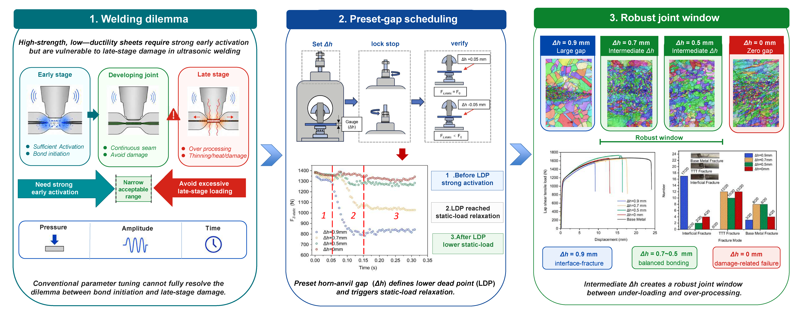
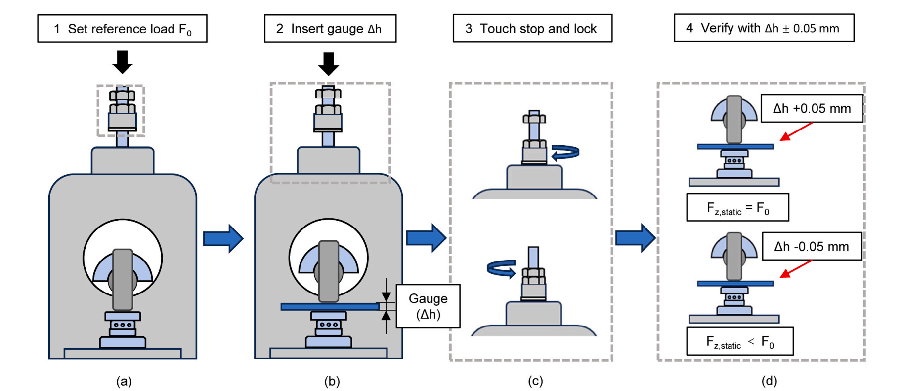

Author Accepted Manuscript
Preset Horn–Anvil Gap as a Position-Triggered Displacement Constraint in Ultrasonic Metal Welding of Invar 36: Loading-Path Design for High-Strength, Low-Ductility Sheet Alloys
Affiliations
- Key Laboratory of Materials and Surface Technology (Ministry of Education), Chengdu 610039, Sichuan, China
- School of Materials Science and Engineering, Xihua University, Chengdu 610039, Sichuan, China
- Institute of Advanced Interdisciplinary Technology, Shenzhen MSU-BIT University, Shenzhen 518172, China
- College of Civil and Transportation Engineering, Shenzhen University, Shenzhen 518060, China
Research at a glance
{kind=link}

{kind=link}

Abstract
Ultrasonic metal welding of high-strength, low-ductility sheet alloys requires sufficient early-stage interfacial activation while preventing late-stage thinning, overheating, and damage accumulation. Using 0.53 mm Invar 36 sheets as a stringent model system, this study demonstrates direct Invar–Invar ultrasonic metal welding and shows that a preset horn–anvil gap Δh can serve as a position-triggered displacement constraint for loading-path design in pneumatic ultrasonic metal welding. Once the lower dead point is reached, the process switches from force-dominant indentation to displacement-constrained loading with static-force relaxation while vibration continues. Coupled in-process monitoring, microstructural characterisation, and lap-shear testing were used to resolve process–structure–property links. Decreasing the preset gap increased collapse, force retention, late-stage tangential response, and thermal input, but not monotonically in a beneficial manner. Three regimes emerged: large-gap under-loading, an intermediate robust window, and zero-gap over-processing with persistent re-shearing. For the present condition set, Δh = 0.5–0.7 mm defined the robust window, and 0.7 mm was preferred because it eliminated interface fracture at lower collapse and thermal demand than 0.5 mm and gave the most uniform local mechanical response. By contrast, zero gap sustained late-stage re-shearing and promoted seam damage despite higher collapse and higher power input. Joint performance was governed by seam architecture and local compatibility rather than bonded area alone. A practical screening requires the combination of termination power with collapse and force-retention descriptors. These results establish preset-gap scheduling as a displacement-centric framework for separating bonding-dominant and damage-dominant stages in ultrasonic welding of high-strength, low-ductility sheet alloys.
Keywords
Broader relevance to ultrasonic welding of high-strength sheet metals
Although demonstrated on Invar 36 sheets, this work addresses a broader challenge in ultrasonic welding of high-strength sheet metals: achieving sufficient early-stage interfacial activation while avoiding late-stage indentation, overheating, and re-shearing damage. This challenge is relevant to ultrasonic welding of steels, stainless steels, titanium alloys, nickel alloys, and other difficult-to-deform metallic sheets.
The main contribution is a displacement-centered loading-path design strategy, not a material-specific parameter set. By introducing the preset horn–anvil gap as a position-triggered constraint and a fourth control variable beyond pressure, amplitude, and time, this study links bond formation, weld-seam microstructure, fracture mode, and in-process monitoring signals. The framework may help guide process-window design, weld quality monitoring, and data-informed quality screening in ultrasonic metal welding of high-strength sheet alloys.
Recommended citation
Zhou, H., Li, B., Tang, X., Wei, R., Qin, Q., Cui, H., Wang, R., and Peng, B. (2026). Preset Horn–Anvil Gap as a Position-Triggered Displacement Constraint in Ultrasonic Metal Welding of Invar 36: Loading-Path Design for High-Strength, Low-Ductility Sheet Alloys. Journal of Materials Processing Technology, 354, 119366. https://doi.org/10.1016/j.jmatprotec.2026.119366.